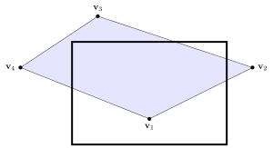
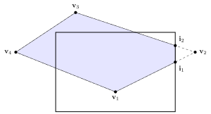
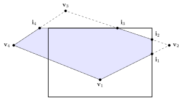
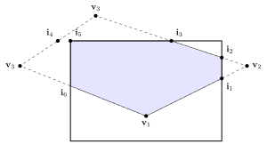
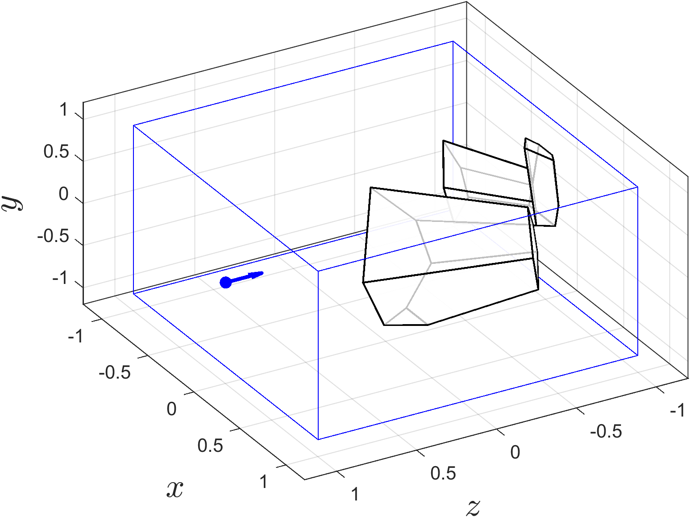
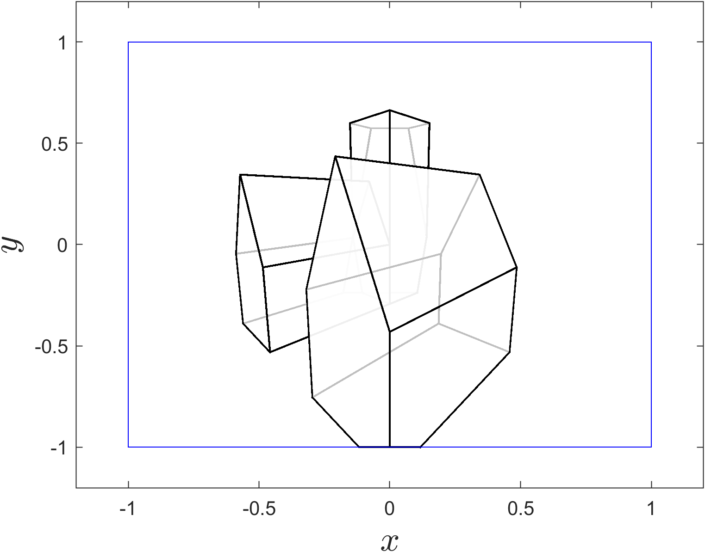

Polygon clipping
Contents
Polygon clipping#
The Sutherland-Hodgman algorithm is used to clip polygons to the edges of the visible region. Given an input list of vertices that define a polygon (e.g., a row of the face array), the Sutherland-Hodgman algorithm loops through each vertex of the polygon and if the current vertex is inside the visible region then we check whether the previous vertex is also inside. If it is the line joining the two points is entirely inside and we add both endpoints to an output list defining the clipped polygon and move onto the next vertex in the input list. If the previous vertex is not inside the visible region we clip the line using the Cyrus-Beck algorithm and add the clipped point and the current endpoint to the output list. If the current point is not inside the visible region but the previous one is, we clip the line to the edge and add the clipped point to the output list. Once all vertices in the input list have been considered the output list contains the information for the clipped polygon.
Algorithm 2 (Sutherland-Hodgman algorithm)
Inputs An \(inputlist\) containing the vertices of a polygon and a visible region.
Outputs An \(outputlist\) containing the vertices of the clipped polygon.
\(outputlist \gets inputlist\)
For each edge of the visible region
\(inputlist \gets outputlist\)
\(outputlist \gets \emptyset\)
For \(i = 1, \ldots \operatorname{length}(inputlist)\)
\(current \gets inputlist(i)\)
If \(i > 1\)
\(previous \gets inputlist(i-1)\)
Else
\(previous \gets inputlist(n)\)
If \(current\) is in front of the edge
If \(previous\) is behind the edge
Add intersection point to \(outputlist\)
Add \(current\) to \(outputlist\)
Else if \(previous\) is in front of the edge
Add intersection point to \(outputlist\)
Return \(outputlist\)
Example 34
Use the Sutherland-Hodgman algorithm to clip the polygon defined by the vertices \(\mathbf{v}_1\) to \(\mathbf{v}_4\) to the visible region shown below.
{kind=link}

Solution
Bottom edge: \(inputlist = \{ \mathbf{v}_1, \mathbf{v}_2, \mathbf{v}_3, \mathbf{v}_4 \}\), \(outputlist = \emptyset\)
all vertices in \(inputlist\) are in front of the edge so it is unchanged.
Right edge: \(inputlist = \{ \mathbf{v}_1, \mathbf{v}_2, \mathbf{v}_3, \mathbf{v}_4 \}\), \(outputlist = \emptyset\)
\(\mathbf{v}_1\) is in front so add to \(outputlist\)
\(\mathbf{v}_2\) is behind and \(\mathbf{v}_1\) is in front so clip \(\mathbf{v}_1 \to \mathbf{v}_2\) to \(\mathbf{i}_1\) and add \(\mathbf{i}_1\) to \(outputlist\)
\(\mathbf{v}_3\) is in front and \(\mathbf{v}_2\) is behind so clip \(\mathbf{v}_2 \to \mathbf{v}_3\) to \(\mathbf{i}_1\) and add \(\mathbf{i}_2\) and \(\mathbf{v}_3\) to \(outputlist\)
\(\mathbf{v}_4\) is in front so add to \(outputlist\)
{kind=link}

Top edge: \(inputlist = \{ \mathbf{v}_1, \mathbf{i}_1, \mathbf{i}_2 \mathbf{v}_3, \mathbf{v}_4 \}\), \(outputlist = \emptyset\)
\(\mathbf{v}_1\) is in front so add to \(outputlist\)
\(\mathbf{i}_1\) is in front so add to \(outputlist\)
\(\mathbf{i}_2\) is in front so add to \(outputlist\)
\(\mathbf{v}_3\) is behind and \(\mathbf{i}_2\) is in front so clip \(\mathbf{i}_2 \to \mathbf{v}_3\) to \(\mathbf{i}_3\) and add \(\mathbf{i}_3\) to \(outputlist\)
\(\mathbf{v}_4\) is in front and \(\mathbf{v}_3\) is behind so clip \(\mathbf{v}_3 \to \mathbf{v}_4\) to \(\mathbf{i}_4\) and add \(\mathbf{i}_4\) and \(\mathbf{v}_4\) to \(outputlist\)
{kind=link}

Left edge: \(inputlist = \{ \mathbf{v}_1, \mathbf{i}_1, \mathbf{i}_2 \mathbf{i}_3, \mathbf{i}_4, \mathbf{v}_4 \}\), \(outputlist = \emptyset\)
\(\mathbf{v}_1\) is in front so add to \(outputlist\)
\(\mathbf{i}_1\) is in front so add to \(outputlist\)
\(\mathbf{i}_2\) is in front so add to \(outputlist\)
\(\mathbf{i}_3\) is in front so add to \(outputlist\)
\(\mathbf{i}_4\) is behind so clip \(\mathbf{i}_3 \to \mathbf{i}_4\) to \(\mathbf{i}_5\) and add \(\mathbf{i}_5\) to \(outputlist\)
\(\mathbf{v}_4\) is behind so clop \(\mathbf{v}_4 \to \mathbf{v}_1\) to \(\mathbf{i}_6\) and add \(\mathbf{i}_6\) to \(outputlist\)
The clipped polygon is now described by \(outputlist = \{ \mathbf{v}_1, \mathbf{i}_1, \mathbf{i}_2, \mathbf{i}_3, \mathbf{i}_5, \mathbf{i}_6, \}\)
{kind=link}

MATLAB code#
The MATLAB function clipped_space(V, F) defined below clips the screen space defined by the vertex and face matrices V and F using the Sutherland-Hodgman algorithm.
function [Vclipped, Fclipped] = clipped_space(V, F)
% Define visible region points and normal vectors
P = [ -1, -1, 1, 1, -1, 1 ;
-1, -1, 1, 1, -1, 1 ;
1, 1, -1, -1, 1, -1 ];
n = [ 0, 0, -1, 0, 1, 0 ;
1, 0, 0, 0, 0, -1 ;
0, -1, 0, 1, 0, 0 ];
% Loop through the polygons in F
Vclipped = V;
Fclipped = [];
for poly = 1 : size(F, 1)
% Loop through the edges of the clipping cube
outputlist = F(poly, :);
for edge = 1 : size(P,2)
inputlist = outputlist;
outputlist = [];
for i = 1 : length(inputlist)
current = inputlist(i);
if i > 1
previous = inputlist(i - 1);
else
previous = inputlist(end);
end
% Calculate intersection point
dcurrent = dot(Vclipped(1:3,current) - P(:,edge), n(:,edge));
dprevious = dot(Vclipped(1:3,previous) - P(:,edge), n(:,edge));
if dcurrent - dprevious ~= 0
t = dprevious / (dprevious - dcurrent);
intersection = [Vclipped(1:3,previous) + t * (Vclipped(1:3,current) - Vclipped(1:3,previous)) ; 1];
end
% Check if polygon edge crosses clipping cube edge
if dcurrent > 0
% if previous point is outside add intersection to output list
if dprevious < 0
Vclipped = [Vclipped, intersection];
outputlist = [outputlist, size(Vclipped, 2)];
end
outputlist = [outputlist, current];
elseif dprevious > 0
% current point is outside and previous point is inside so add
% intersection to output list
Vclipped = [Vclipped, intersection];
outputlist = [outputlist, size(Vclipped, 2)];
end
end
end
% If outputlist is non-empty add to Fclipped
if isempty(outputlist) == 0
nclippedverts = length(outputlist);
if isempty(Fclipped)
Fclipped = outputlist;
maxverts = length(outputlist);
else
if maxverts < nclippedverts
% Pad out Fclipped if number of clipped vertices is greater
% than current maxverts
Fclipped = [Fclipped, zeros(size(Fclipped, 1), nclippedverts - maxverts)];
Fclipped(:,maxverts + 1 : end) = Fclipped(:, maxverts);
maxverts = nclippedverts;
elseif maxverts > length(outputlist)
% Pad out outputlist if number of clipped vertices is less than
% current maxverts
outputlist = [outputlist, ones(1,maxverts - nclippedverts) * outputlist(end)];
end
% Add outputlist to Fclipped
Fclipped = [Fclipped ; outputlist];
end
end
end
end
The affect of applying the Sutherland-Hodgman algorithm to the screen space from Example 32 is shown in Fig. 75. Note that all of the objects have been clipped to the edges of the unit cube that defines the visible region. A view looking down the \(z\)-axis is shown in Fig. 76.
{kind=link}

Fig. 75 Plot of the clipped screen space viewed from the side.#
{kind=link}

Fig. 76 Plot of the clipped screen space viewed looking down the \(z\)-axis.#